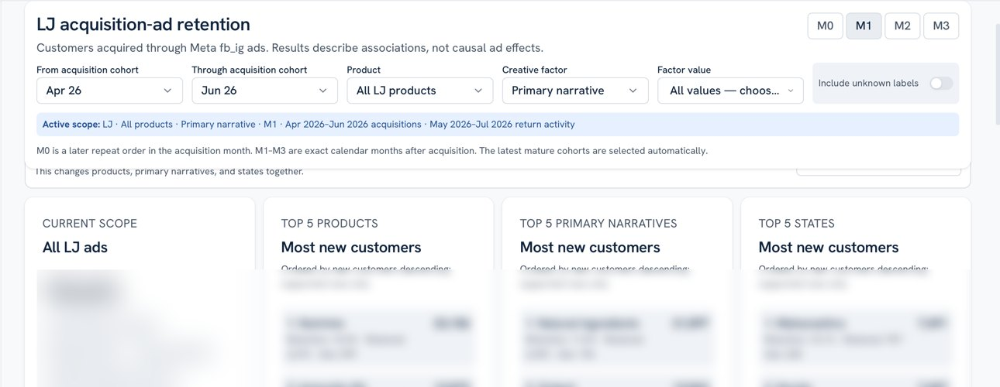
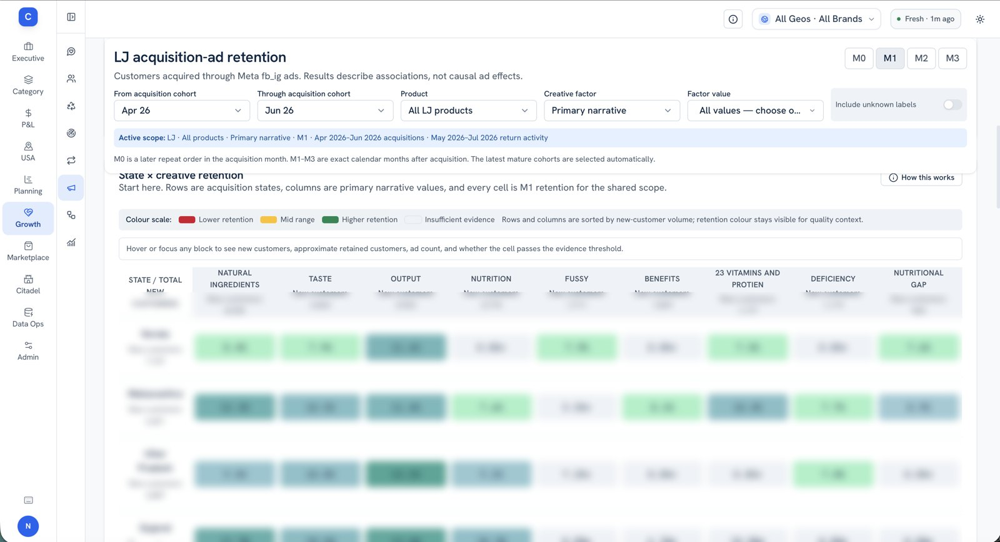
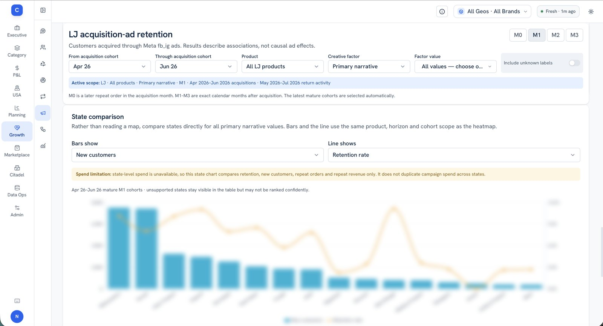

numbers blurred
FILE 03 · ACQUISITION
Acquisition ads
Which Meta ads bring in customers who actually come back, and what do those ads have in common?
FOR
CEO's office
KIT
Claude Code, VS Code, DBeaver
STATUS
live
WHAT IT LOOKS LIKE scroll →
01 · cohort window, product and creative factor; everything updates together
02 · state × creative heatmap: thin evidence stays grey
03 · state comparison: new customers vs retention



HOW IT WORKS
- 01Acquireevery new customer traced to the Meta ad that brought them in
- 02Tageach ad tagged by creative factor: taste, natural ingredients, fussy eaters
- 03Followdid they order again, and how many months later?
- 04Askspend, CAC or volume vs retention, by product, narrative or state
CHOICES I MADE
→ Question first: pick the business question, see the evidence for it.
→ Minimum evidence: thin cells are greyed out instead of ranked.
→ Honest labels: associations, not causes, and missing data is called out, not faked.
SLICE IT BY
✓ cohort window
✓ product + creative factor
✓ state